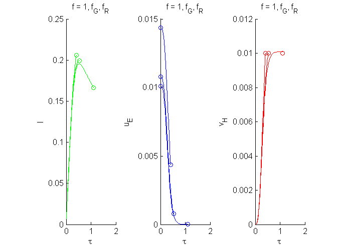

Demonstrates the use of get_eb_min
plots lb, uE and vH against tau for f = 1, f_G and f_R, where growth or maturation ceases
% set parameters g = 2; k = .001; vHb = .01; % pack parameters p = [g; k; vHb]; % get f_G and f_R [f_G lb_G] = get_eb_min_G(p); [f_R lb_R] = get_eb_min_R(p); % [f lb] = get_eb_min(p); % f_G = f(1); f_R = f(2); lb_G = lb(1); lb_R = lb(2); close all figure for f = [1, f_G, f_R+1e-8] [tb lb info] = get_tb(p, f); [uE0, lb, info] = get_ue0(p, f, lb); [t luv] = ode45(@dget_luv, [0;tb], [0; uE0; 0], [], g, k); subplot(1,3,1) hold on plot(t, luv(:,1),'g', tb, lb, 'og') xlabel('\tau'); ylabel('l'); title('f = 1, f_G, f_R') subplot(1,3,2) hold on uEb = f * lb^3/ g; plot(t, luv(:,2),'b', [0; tb], [uE0;uEb], 'ob') xlabel('\tau'); ylabel('u_E'); title('f = 1, f_G, f_R') subplot(1,3,3) hold on plot(t, luv(:,3),'r', tb, vHb, 'or') xlabel('\tau'); ylabel('v_H'); title('f = 1, f_G, f_R') end